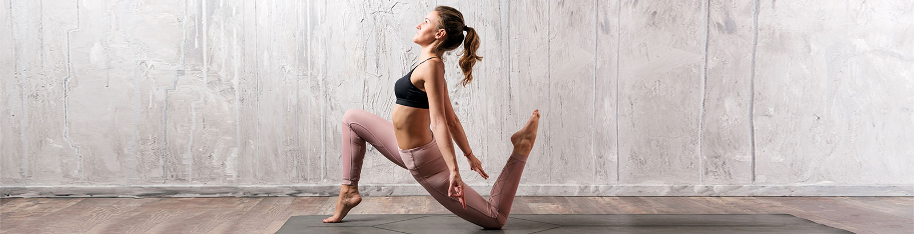

Posturas
Sin duda el aspecto más conocido del Yoga son las Asanas. Este es el nombre en sánscrito que reciben las postura de yoga. Originalmente, asana quería decir «asiento»: la postura sentada en la cual los yoguis antiguos practicaban meditación. A partir de ellas se compone una clase o sesión de yoga, sea cual sea el camino que estemos practicando. Explicaciones más profundas mencionan las asanas como llevar al cuerpo físico a posiciones o formas que cultiven el auto conocimiento, la relajación y la concentración.

Respiración
La respiración es el volante vital, podemos abstenernos de alimentos sólidos durante muchos días, de líquidos algunos días, pero del aire sólo unos pocos minutos. Todos los fenómenos vitales están ligados a procesos de oxidación y de reducción, sin oxígeno no hay vida.
Tenemos que volver a aprender a respirar, lo hacíamos bien cuando éramos chicos, pero después con nuestras crispaciones, apresuramientos, emociones negativas, ansiedades, cólera, etc, perdimos el hábito de la respiración natural.
Meditación
La meditación es aquietamiento de los pensamientos, a veces podemos experimentar este aquietamiento por segundos apenas, ante un atardecer o ante la sonrisa de un bebé. Estos instantes nos van dejando como un aroma de paz que anhelamos volver a experimentar, en la meditación estos instantes se van prolongando.
Hay muchísimos métodos para llegar a ese estado, cada uno debe encontrar aquel con el que mejor se identifica. En Yoga4Life, la búsqueda de este estado la integramos al final de cada postura.